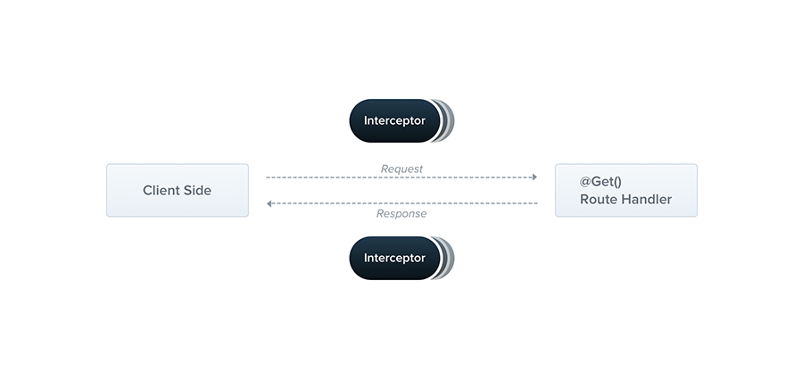

인터셉터는 전 처리는 Middlware → Guard → Interceptor 으로 Pipe 전 단계에서 실행됩니다.

[NestJS - Interceptor Image](https://docs.nestjs.com/interceptors)인터셉터는 AOP(Aspect Oriented Programming) 기술에 영감을 받은 유용한 기술입니다.
- 메서드 실행 전/후 추가 로직 바인딩
- 함수에서 반환된 결과 변환
- 함수에서 발생한 예외 변환
- 기본 기능 동작 확장
- 특정 조건에 따라 함수를 완전히 재정의 (캐싱 목적)
Interceptor 사용하기
인터셉터를 가장 많이 예시로 들고 있는 것은 라우터 핸들러 전후로 실행 시간을 측정하는 로깅 입니다.
그 로깅을 만들어보면 아래와 같습니다.
logging.inteceptor.ts 코드
import {
Injectable,
NestInterceptor,
ExecutionContext,
CallHandler,
} from "@nestjs/common";
import { Observable } from "rxjs";
import { tap } from "rxjs/operators";
@Injectable()
export class LoggingInterceptor implements NestInterceptor {
intercept(context: ExecutionContext, next: CallHandler): Observable<any> {
console.log("Before...");
const now = Date.now();
return next
.handle()
.pipe(tap(() => console.log(`After... ${Date.now() - now}ms`)));
}
}
CallHandler
이 인터페이스는 인터셉터의 특정 지점에서 Route handler 메서드를 호출하는데 사용할 수 있는 handle() 메서드를 구현합니다.
만약에 handle() 메서드를 호출하지 않으면 Route handler 메서드 실행되지 않습니다.
이를 통해 request/response 스트림을 효과적으로 wraps 할 수 있으며 전/후 처리를 커스텀 할 수 있습니다.
이 handle() 메서드는 Observable 를 반환하기 때문에, 응답을 추가로 조작할 수 있는데요.
Observable 이라는 Rxjs 연산자는 무엇일까요? 🤔
Rxjs 란?
- 해당 유튜브 세션 영상 : https://www.youtube.com/watch?v=VH1GTGIMHQw&t=5827s
RxJS 는 이벤트 스트림을 다루는 라이브러리로,
이를 operator를 이용해 변환할 수 있습니다.
RxJS == 함수형 & 이벤트 & 비동기
Observable 이란?
- 이벤트가 흐르는 스트림
- lazy 한 실행 (누군가 subscribe 를 해야 실행 됨)
- observer 가 observable 을 subscribe 하면서 next, error, complete 키워드를 사용해 이벤트 처리
- 위 코드(logging.inteceptor.ts) 처럼 pipe() operator 를 사용해서 스트림 내부에서 변환 처리 가능
💡 observer 는 observable 을 구독하는 대상 > observable 에 들어오는 event 를 처리합니다.
💡 operator 는 각 이벤트 연산이 가능한 pure function 입니다. (tap(), filter(), min(), max() 등이 있음)
인터셉터 적용 방법
@UseInterceptors(LoggingInterceptor) // ✨ Here!
@Post()
async create(@Body() request: SignupUserDto): Promise<void> {
// 로직
}
위와 같이 데코레이터만 추가하면 끝입니다. 😁
메서드 말고도 컨트롤러 자체에도 추가할 수 있습니다.
그리고 Global 적으로 하고 싶다면?
const app = await NestFactory.create(AppModule);
app.useGlobalInterceptors(new LoggingInterceptor());
예외 매핑하기
기존에 발생한 오류를 다른 오류로 재정의도 가능합니다.
import {
BadGatewayException,
CallHandler,
ExecutionContext,
Injectable,
NestInterceptor,
} from "@nestjs/common";
import { Observable, catchError, tap, throwError } from "rxjs";
@Injectable()
export class LoggingInterceptor implements NestInterceptor {
intercept(
_: ExecutionContext,
next: CallHandler<any>
): Observable<any> | Promise<Observable<any>> {
return next
.handle()
.pipe(catchError((err) => throwError(() => new BadGatewayException())));
}
}
캐시 처리 하기
handler 처리를 방지하고 다른 값을 반환하는데 있어 캐시로 활용되고 있습니다.
@Injectable()
export class LoggingInterceptor implements NestInterceptor {
intercept(
context: ExecutionContext,
next: CallHandler<any>
): Observable<any> | Promise<Observable<any>> {
// 해당 url 로 캐시 정보가 있다면?
const req: Request = context.switchToHttp().getRequest();
const { isCahced, data } = cacheService.getData(req.originalUrl);
if (isCahced) {
return data; // 캐시로 반환!
}
return next.handle(); // 없으면 그냥 라우트 핸들러 실행!
}
}
Interceptor vs Middleware 차이
위의 글을 보면...
Middleware
- request, response, next 인자를 받아 req, res가 HTTP 위에서 동작하게 설계
- HTTP 통신이 아니면 사용이 불가능
Interceptor
- HTTP(request, response, next) 외에도 매개변수로 Excuetion Context 라는 helper class를 받음
- HTTP 외에도 WebSocket, GraphQL, RPC(Remote procedure call) 위에서도 동작!